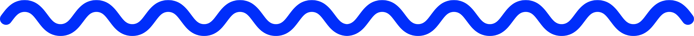

Can we count on you?
Brutalism-inspired web design meets iconic Turkish-German street food
Did you know that Berlin has more Kebab shops than Istanbul and houses the biggest Turkish population outside of Turkey? This microsite invites foodies and travel enthusiasts to explore the multicultural city of Berlin through the culinary love story of the Döner Kebab.

Project Journey
Quick overview from start to finish
Craft an unsolicited call-to-action campaign for not-for-profit Médecins Sans Frontières (MSF) based on the challenge of global access to Covid-19 vaccines using a timescape and four Instagram tiles.
Along with extensive secondary research, I conducted primary research through a survey and interviews.
Overview:
- Used mind maps to organise secondary research
- Curated a list of Berlin's top 20 Döner Kebab shops and received votes on these through the survey
- 153 survey participants from Berlin social media groups on Facebook and Reddit
- Survey demonstrated that the Döner is the pride of Berlin with 84% believing that Berlin has the best Döner in Germany
- Interviewed 8 participants about their travel habits
- Interviews showed that people want an authentic travel experience and love a bargain
Along with extensive secondary research, I conducted primary research through a survey and interviews.
Methods:
- Mind maps
- Mood board
- User personas
- Sitemap
- Sketches
Along with extensive secondary research, I conducted primary research through a survey and interviews.
Wireframes:

Mockups: